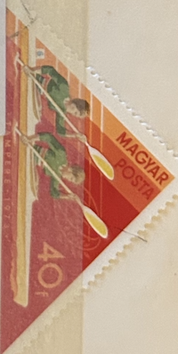
| SOURCE | TITLE| IMAGE MATCH | click to source page |
| Old-Stamps.com | Homenaje a los jugadores celebres Munich 74 / Rep. de Guinea Equatorial Correos 1974 |  |
| Shutterstock | 8+ Thousand 1973 Postage Stamp Royalty-Free Images, Stock Photos & Pictures | Shutterstock | 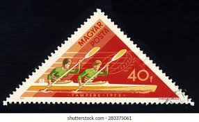 |
| Old-Stamps.com | Tampere 1973 / Magyarország | 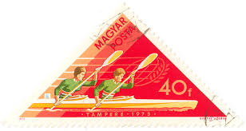 |
| Alamy | Postal stamp hi-res stock photography and images - Page 2 - Alamy | 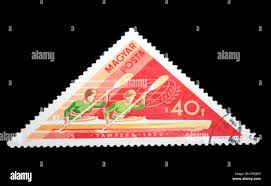 |
| Numismatica - Bellísima Reliquia: MONEDA ROMANA ANTONIANO, Emperador CLAUDIO II, Ceca ROMA, diámetro 20mm. Época 251- 263 d.C. Bella Patina esmeralda en el bronce. Con 1766 años de antigüedad Precio: 600💲🔥🔥🔥🔥🔥🔥🔥🔥🔥🔥🔥 | Facebook | 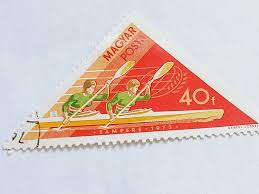 | |
| Osta | 52-1 Leiunurk sport (247383145) - Osta.ee | 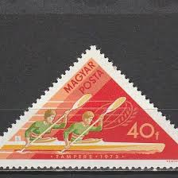 |
| Osta | 52-1 Leiunurk sport (247383145) - Osta.ee | 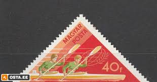 |
| mintindia.in | www.mintindia.in: www.mintindia.in:We have launched this website with primary objective to spread education about various coins of India and around the earth to help each numismatist, Introducing huge collections of the antique material | 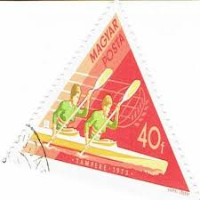 |
| BidCurios | Hungary - Used stamp - 1973 Water Sports World Championships - (B-002/K5)g - BidCurios | 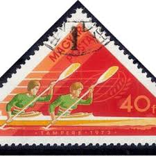 |
| Solomon Islands commemorative stamp collections available | 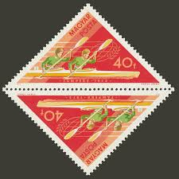 | |
| Todocolección | hungria 1958 scott j241 sello º postage due num - Buy Antique stamps of Hungary on todocoleccion | 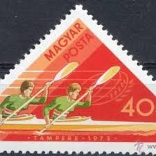 |
| ebid.net | HUNGARY 1973 - Kayak Canoeing - World Aquatic Sports Championship 40fi - Used on eBid United Kingdom | 179419971 | 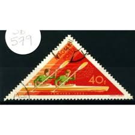 |
| Aukro | Maďarsko 1973 Mi: HU 2919A Série: Maďarská vítězství ve vodních sporte | Aukro | 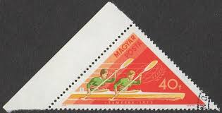 |
| eBay | MAGYAR HUNGARY STAMP MNH [SALE] [Choose 10pc of MINT is $3.5] unused WM9749 | eBay | 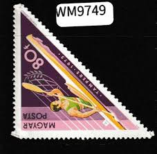 |
| eBay | Water Sports Hungarian Stamps for sale | eBay | 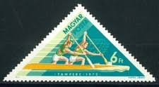 |
| PicClick AU | HUNGARY MAGYAR POSTA 1961 Castles & Fortresses 80F Brown Egervar - Used $1.15 - PicClick AU | 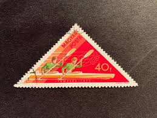 |
| eBay | Water Sports Asian Stamps for sale | eBay |  |
| eBay | SE)1973 HUNGARY, WORLD WATER SPORTS CHAMPIONSHIPS, WOMEN'S KAYAK, PAIRS, WATER P | eBay | 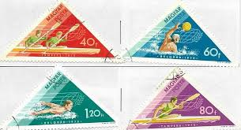 |
| Dreamstime.com | Vintage Waterpolo Stock Photos - Free & Royalty-Free Stock Photos from Dreamstime |  |
| Dreamstime.com | Vintage Rowing Team Stock Photos - Free & Royalty-Free Stock Photos from Dreamstime | 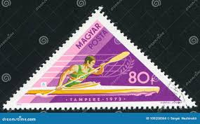 |
| eBay | World Hungary French Cols. Sport Wildlife MH Used (Apx 250) MK7472 | eBay | 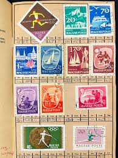 |
| mintindia.in | www.mintindia.in: www.mintindia.in:We have launched this website with primary objective to spread education about various coins of India and around the earth to help each numismatist, Introducing huge collections of the antique material |  |
| eBay | HUNARY # 1249-53 LAKE BALTOM SHIPS BATHERS FISHERMAN | eBay | 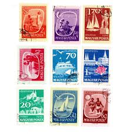 |
| eBay | Cancelled to Order/CTO Water Sports European Stamps for sale | eBay | 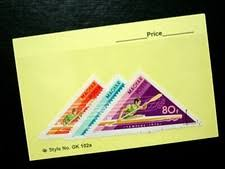 |
| Alamy | Hungarian postage stamp Stock Photo - Alamy | 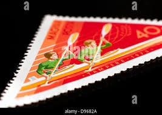 |
| eBay | Hungary J84 used 1972 4v Sport Coat of Arms | eBay | 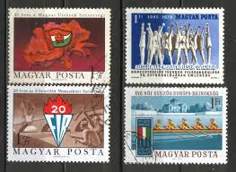 |
| The Philately | Hungary 1973 Mi 2919A-2925A Hungarian Victories in Water Sports at Tampere and Belgrade Sc 2261-2267 for sale at The Philately | 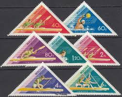 |
| eBay | Hungary, 1963 Skating & Ice Dancing, Scott 1484/ /1490, 5 Stamps, CTO | eBay | 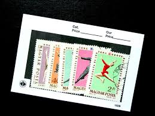 |
| eBay | Vintage POSTAGE STAMPS Lot And RARE THEATRE TICKETS USA Europe Argentina | eBay | 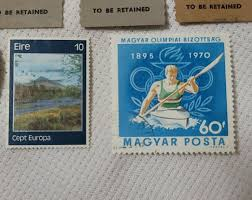 |
| eBay UK | Olympics Postage Hungarian Stamps for sale | eBay UK | 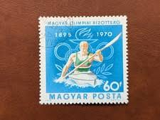 |
| eBay | Hungary 1978 MNH Mi 3274Zf Sc B319 Generations, by Gyula Derkovits.Szocfilex '78 | eBay | 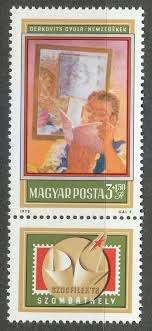 |
| eBay | 2000 All Different HUNGARY , Book Mounted | eBay | 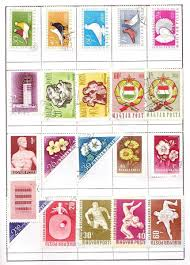 |
| stampphenom.com | Hungary 1980 Double Kayak - Imperforate – StampPhenom |  |
| Alamy | Gold seal stamp hi-res stock photography and images - Page 7 - Alamy | 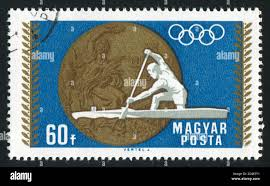 |
| eBay | Used Hungarian Stamp Blocks for sale | eBay | 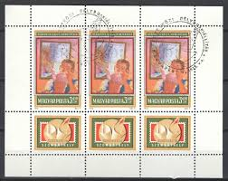 |
| eBay | Hungary 1952 Olympic Games - Helsinki Sport MNH, OG+ @ used series | eBay | 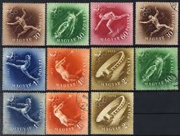 |
| thislifeonline.co.za | Hungary Communist Stamps 1968 Hungary Communist Party Stamps - Complete Set 2463A-2464A Fine Used Collector Stamps | 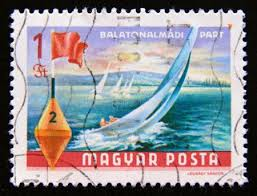 |
| Alamy | Hungary stamp 1972 hi-res stock photography and images - Alamy | 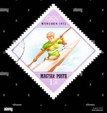 |
| eBay | COLLECTION OF HUNGARY OLYMPIC STAMPS (65 MNH) IN SMALL STOCK BOOK | eBay |  |
| Shutterstock | Hungary Circa 1980 Postal Stamp Printed Stock Photo 97503659 | Shutterstock | 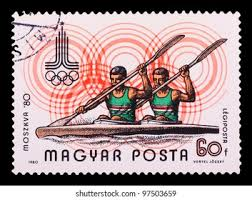 |
| buyhungarianstamps.com | Hungary Airmail – Eastern Europe Postage Stamps | Hungaria Stamp Exchange | 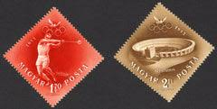 |
| Mystic Stamp Company | 1160 - 1956 Hungary - Mystic Stamp Company | 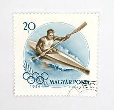 |
| Stamp Digest | Stamps on Hungarian Olympic Committee – Hungary 1970 – Stamp Digest | 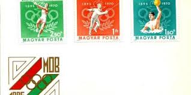 |
| eBay | Hungary mint never hinged MNH Scott 1598-1606 B237 Olympics | eBay | 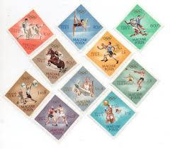 |
| eBay | Hungary, Scott 2034, Woman's Four, 1970, used, 107829 | eBay | 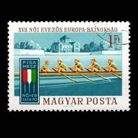 |
| Free stamp catalogue | Stamps from Hungary - Freestampcatalogue.com - The free online stampcatalogue with over 500.000 stamps listed. | 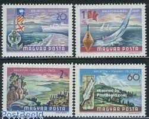 |
| Shutterstock | Hungary Circa 1980 Set Postage Stamps Stock Photo 127091447 | Shutterstock | 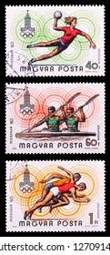 |
| Federal University of Agriculture, Abeokuta | POSTAGE STAMPS EUROPE HUNGARY | 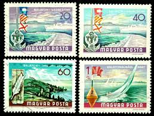 |
| The Philately | Aquatic Sports Topical Stamps for Sale - The Philately | 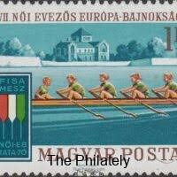 |
| buyhungarianstamps.com | C202-C205 Hungary - Lake Balaton and Summer University (MNH) – Eastern Europe Postage Stamps | Hungaria Stamp Exchange | 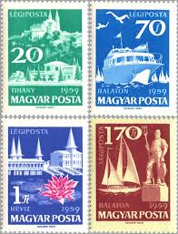 |
| eBay | Hungary 1965 Stamp Day B254-57 Full Sheet of 20 | eBay |  |
| eBay UK | Hungarian Sports Postal Stamps for sale | eBay UK | 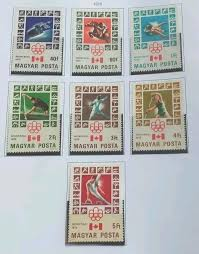 |
| Alamy | HUNGARY - CIRCA 1968: a stamp printed in the Hungary shows Women Swimmers, Summer Olympic sports, Mexico 68, circa 1968 Stock Photo - Alamy | 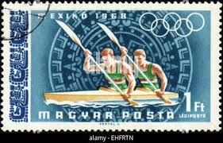 |
| eBay | S46912 Hungary MNH 1964 Olympic Games 10v +10v Perf + Imperf 2 Scans | eBay | 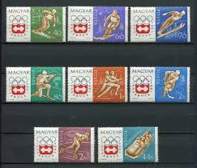 |
| Alamy | HUNGARY - CIRCA 1970: a stamp printed in Hungary shows Canoeing, Olympic Sport, circa 1970 Stock Photo - Alamy |  |
| Triangular Stamps - Hungary | 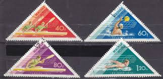 | |
| Ships on Stamps Unit | Seemotive, Kayak, Umiak, Eskimo, Inuit | 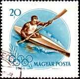 |
| Colnect | Hungary : Stamps [Year: 1969] [1/31] : Colnect 📮 | |
| eBay | 1972 Summer Olympics Munich Munchen Hungary Magyar 5 Stamp + Sheet + 3 Indonesia | eBay | |
| eBay | HUNGARY 1978 SC B319 SZOCFLEX '78 SZOMBATHELY 3fo+1.50fo + LBL (3) MNH OG VF | eBay |  |